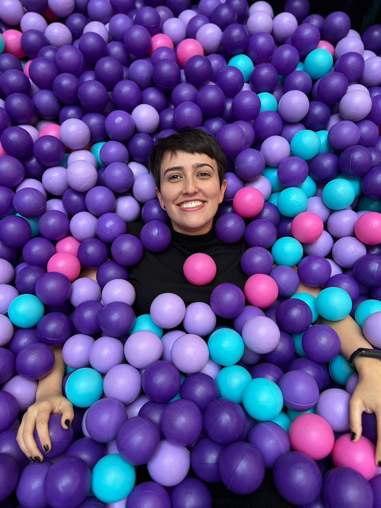

Isabela Araujo
I build and research AI systems that work in the real world. As an ML Engineer at Nubank, I operationalize machine learning at scale across Brazil and Mexico. As a researcher at HAILab (PUCPR), I investigate how large language models can be applied to clinical NLP — text normalization, abbreviation disambiguation, and term mapping in Portuguese.
My focus: NLP, LLMs, and generative AI - especially in healthcare contexts where language is messy, multilingual, and high-stakes.

Selected as a BRAFITEC (Brasil–France Ingénieurs Technologie) scholar — a CAPES-funded program that places Brazilian engineering students in French Grandes Écoles for a full academic year with dual credit. I studied in the Technologies de l'Information pour la Santé track, covering medical image processing, signal processing, computer vision, biomechanics, human–machine interface, optimization algorithms, and advanced statistics.
Worked at the Experimental Psychology Laboratory studying pedestrian behavior in traffic scenarios involving electric and conventional vehicles. Collected and processed behavioral data using MATLAB and audio/video recording equipment. Contributed to experimental design, quantitative data analysis, and visualization for human–vehicle interaction research.
Undergraduate thesis project in collaboration with PROTiP Medical through the HiPEAC research network, focused on patient-specific 3D-printed prosthetic implants. Developed a Python-based automation pipeline to streamline implant sizing from medical imaging data, integrating CAD software and 3D modeling to reduce manual steps in the production of personalized orthopedic devices.
NLP & AI
ML Engineering
Infrastructure
I'm open to research collaborations on NLP and clinical AI, interesting ML engineering challenges, and conversations about LLMs in healthcare. Feel free to reach out.